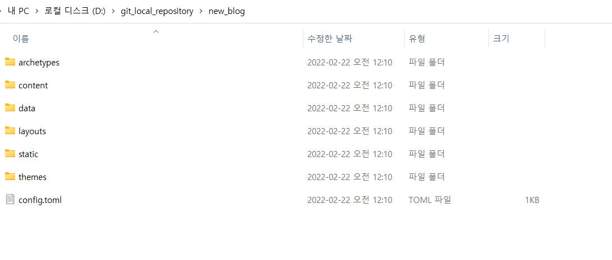

들어가기에 앞서
Hugo 공식 문서는 친절한 듯 친절하지 않다. 초보자가 바로 이해하기 어렵고 Hugo 언어인 Go template이 직관적이지 않아 바로 쓰기 힘들다. 그렇다고 공식 문서를 안볼 수는 없다.
초심자가 Hugo를 이해위한 자료는 턱없이 부족하고 특히 한국어로 된 자료는 더 없다. 어쩔수없이 공식 문서를 봐야 Hugo를 이해하고 이를 바탕으로 블로그를 만들 수 있다.
Web 개발 관련 지식이 있는 사람이라면 동의 하지 않을 수도 있지만 맨처음 Hugo를 만들때 HTML,CSS가 뭔지도 몰랐다. 지금 생각해보니 굳이 Hugo로 개인 블로그를 만드려는 사람들 중 나처럼 HTML,CSS 조차 모르는 사람이 얼마나 있을까 싶다.
이 글은 나와 같이 Hugo 자체를 이해하는데 어려움을 겪는 사람에게 조금이라도 도움을 주기 위해 작성했다. 사실 아무것도 모르는 체로 이것저것 해보면서 보낸 시간이 아까워서 누군가에게라도 알려주자는 마음이 더 크다.
Hugo를 이해하기 위해서는 공식 문서는 필수다.
그렇다고 공식 문서가
공식 문서를 통해 본인이 만들고자 하는 기능을 구현할 수 있도록 돕기 위해 작성됐다. 이 글을 작성하고 있는 나는 HTML, CSS,JS에 대한 지식이 전무한 상태로 오로지 내가 원하는 스타일의 블로그를 만들어 운영하겠다는 생각 하나로 Hugo를 접했다. 그러다보니 공식 문서에서 제공하는 친절한듯 친절하지 않은 예시와 뭔말인지 전혀 이해되지 않는 Hugo Q&A 사이트를 기웃기웃 하며 Hugo에 대해 어렴풋이 알아갔다.
종종 앎의 깊이를 넓혀준 한글 자료들을 발견하긴 했지만 내가 구현하고자 하는 기능과 직면했던 여러 오류를 해결하기 위해 직접적으로 도움을 주는 자료는 매우 적었다. 아니 어쩌면 그런 자료가 있었지만 완전 초짜가 보기에는 이해하기 너무 어려운 수준이었을 지도 모른다.
블로그를 개설해가면서 정말 많은 문제를 접했고 그중 일부는 방법만 알면 매우 간단했었기에 허무했었던 적이 여럿 있었다. 처음 블로그 개설을 마음 먹었을 때 즉각적인 문제 해결에 도움을 줄 수 있는 글을 작성하고자 했는데, 지금 다루고 있는 Hugo가 그 범주에 해당되는 주제였다.
이 글에서는 Hugo 공식 문서의 매우 일부만 다루지만 이 글을 통해 Hugo 작동원리와 문서에 쓰인 기본 용어들을 이해한다면 원하는 기능을 공식문서에서 쉽게 찾을 수 있을거라 생각한다.
오른쪽에 있는 목차를 활용해 쉽게 이동이 가능하니 필요시 활용했으면 좋겠다.
구조 이해하기
Hugo를 설치하면 아래와 같은 구조의 폴더가 생성된다. 기본으로 생성된 폴더들은 홈페이지를 만들기 위한 역할이 있다. Hugo를 이해하기 위해서 먼저, 생성된 폴더가 각각 어떤 기능을 하는지 그리고 하위 항목에 있는 파일들은 어떤 기능을 하는지에 알아야한다. 물론 사용중인 테마에 따라 폴더 구조나 포함된 파일들이 조금씩 다르지만 기본 구조는 같다. 폴더 별 기능과 기본 문법만 이해한다면 테마에서 원하는 기능을 내 블로그에 쉽게 이식할 수 있다.
hugo new site 명령어를 실행한 뒤 생성된 6개 폴더와 개별 폴더의 하위항목에 있는 파일의 기능을 설명한 뒤 추가적으로 Assets 폴더를 설명하겠다. Assets 폴더는 기본 6개 폴더에 포함되지는 않으나 대부분 테마에서 Assets 폴더를 활용하므로 알아두면 나쁠 것 없다.

archetypes
-
default.md
초기 Markdown 세팅값을 설정하기 위해 사용된다. cmd에 hugo new Test/Test.md를 입력하면
content\Test경로에Test.md가 생성된다.default.md에 있는 기본 세팅값이[test.md](http://test.md)에 기본으로 포함된 것을 알 수 있다.- Dash( - )로 둘러 쌓인 내용을
Front Matter라 부른다. - Fornt Matter는 Hugo 문법에서 다양한 역할을 수행한다. 추후 문법 파트에서 자세히 다룰 예정이다.


- Dash( - )로 둘러 쌓인 내용을
content
게시글(= 마크다운 파일)이 저장되는 공간이다. 게시글에 첨부되는 자료들은 content 폴더에서는 불러올 수 없고 static폴더에 저장한 뒤 불러와야한다.
content 폴더에 사진과 markdown을 한번에 관리하는
leaf bundle을 사용할 수 있지만 한정된 용도로 사용되고 부가적인 기능이다보니 이 글에서는 다루지 않는다. 기본 문법과 용어를 이해하고 나면 leaf bundle 문서(링크)를 쉽게 이해할 수 있으니 사용해보고 싶다면 공식 문서를 참고하자.
content 폴더에 파일을 넣으면 폴더명이 곧 URL 주소가 된다. 폴더명에 있는 띄어쓰기를 under bar( _ ) 또는 Dash( - )로 바꾸자. content\Test\Test.md는 웹주소\Test\Test 로 URL을 갖는다.
data
.yml, .yaml, .json, .xml, or .toml 확장자인 파일을 홈페이지에 불러오기 위한 저장 공간이다. 딱히 이러한 확장자를 가진 파일을 사용할 일이 없다보니 data 폴더를 거의 활용하지 않는다.
layouts
블로그를 최초 설치했다면 빈공간이다. layouts 폴더는 블로그 뼈대가 되는 html 파일들이 저장되는 공간이므로 자주 들락거릴 것이다. 설치한 theme 폴더에 있는 layouts 폴더에 들어가보면 _default , partials, shortcodes 폴더와 index.html, 404.html 파일이 있다. 사용하고 있는 Theme별로 폴더가 조금씩 다르겠지만 앞에 나열한 자료들은 기본적으로 포함되어 있다.
Theme 폴더에 있는 자료들은 직접 수정하지 말자. 자료를 복사해 블로그 설치 폴더에 붙여넣어 활용하자. 이렇게 하는 이유는 원본 데이터를 언제든 백업하기 위함이기도 하고 Theme 제작자를 존중하는 의미라고 한다.
layouts 폴더를 이해하기 위해서는 Hugo가 페이지를 어떻게 구분하는지 알아야한다. Hugo는 페이지를 Home page, List page, Single page로 구분해서 인식하는데, 정의된 페이지별로 사용되는 문법이 약간 다르다. 그러므로 내가 지금 수정하고 있는 페이지가 어떤 페이지로 구분되는지 알고 있어야한다.
Hugo는 layouts 내 디렉토리와 파일명으로 어떤 페이지에 속하는지 파악한다. Home page로 인식되는 파일은 Index.html이며 Single page로 인식되는 파일은 _default 폴더에 있는 Single.html이다. list page는 _default 폴더에 있는 list.html로 인식되며 list page는 section과 taxonomy로 세분화 된다. section과 taxonomy는 게시글을 모으는 방식에 차이가 있다. section은 메뉴바에 정리된 방식으로 게시글을 보여준다면, taxonomy는 공통된 태그가 있는 게시글을 모아서 보여준다. 하나의 게시글에 여러 태그를 달 수 있으니 태그끼리 게시글이 중복되는게 일반적이다.
section과 taxonomy가 이해되지 않는다면 문법을 미리 읽고 넘어가자. [링크 추가]
Hugo가 페이지를 어떻게 구분하는지 알았으니 layouts 내 구조를 뜯어보면서 이해가 안되거나 모호했던 기분을 해소해보자.
-
Index.html
파란색으로 네모 박스 쳐져있는 영역이 index_html이 보여지는 공간이다. Hugo가 Homepage로 여기는 영역에는 index.html이 불러와진다. 앞에서 분명 homepage가 index.html이라고 설명했는데 index.html이 화면의 일부만 차지하는점에 의아할 것이다. Baseof는 일종의 메인보드 역할을 한다고 보면 된다. 메인보드가 램과 하드 cpu를 연결하듯 Baseof안에 네모 박스쳐져있는 html 파일을 불러와 페이지 전체를 구성한다. Baseof.html도 layouts 폴더 내 있으므로 조금 있다가 나온다. 아직 Hugo 문법을 배우지 않았으니 Homepage를 수정하기 위해서는 index_html을 건드리면 되겠구나하는 수준으로 이해하자.

-
_default/list.html
나머지 영역은 동일하고 파란색 영역만 list.html로 대체 됐다. 아직 게시글이 하나 밖에 없어서 얼핏 보면 같은 페이지처럼 보이지만 타이틀 다르다. 카테고리 페이지를 수정하고 싶다면 list.html을 건드리면 되겠구나 정도만 이해하자.

-
_default/single.html
single page도 파란색 영역만 제외하고 모두 동일하다. 게시글이 보여지는 양식을 수정하고 싶다면 single.html을 건드려야한다는 점만 알고 넘어가자.

<br> -
_default/baseof.html
baseof.html은 메인보드 역할을 한다. 아래 코드는 이 블로그의 baseof.html이다. 여러 html들이 이곳에 불러와진 뒤 하나의 html로 완성된다. 모든 page는 baseof를 통해 완성된다.
이건 도대체 뭐지하얀색으로 블럭쳐져있는 영역을 보자. 이 공간에 index.html, list.html, single.html등이 불러와 진다. index.html, list.html, single.html 파일을 열어보면 모두 {{ define “main” }}으로 시작한다.

-
partials/*
Partials 내 html 파일들은 기능적으로 구분된 html 조각이라고 보면 된다. 어떤 사용자든 누군가가 쓰고있는 조각을 가지고와 본인의 baseof에 붙여넣으면 해당 기능을 똑같이 사용할 수 있다.
대표적인 예시가 화면 좌측에 있는 offcanvas_menu.html이다. 이 html은 bootstrap에 있는 offcanvas 기능을 단순히 복사하여 내 입맛대로 수정한 뒤 사용중이다. 왼편에 있는 화살표
>를 누르면 나오는 메뉴바가 offcanvas_menu.html이다. 누구든 이 기능을 쓰고싶다면 Github에 있는 offcanvas_menu.html 파일을 partial 폴더에 넣은 뒤 baseof에서{{ partial ‘offcanvas_menu.html’ .}}명령어로 불러오면 된다. (단 bootstrap을 사용하기 위해 필요한 기본 파일들이 설치되어있어야한다. ) 아니면 다른 테마에 있는 기능을 내 블로그에 이식할 수도 있다. 이에 대해서 향후 포스팅 할 예정이다.
Static
홈페이지 제작에 필요한 각종 이미지,사운드, css, js 등이 저장되는 공간이다. Static 공간에 있는 파일들은 모두 URL주소http://{server-url}/image.jpg 로 변환된다. 혹시나 업로드를 원하지 않는 파일이 있다면 static 폴더에서 지우자.
아래 그림처럼 static 폴더에 있는 hugo1. jpg를 url주소로 불러올 수 있다.

Themes
이 글을 읽는 분들이라면 Theme 설치까지는 완료 했으리라 생각한다. 혹시라도 Theme을 설치한 뒤 어떻게 해야할지 몰라 헤메는 분들을 위해 작성했다. Theme을 설치했음에도 여전히 하얀화면이거나 Theme 사이트에서 본 것과 같이 화면이 뜨지 않아 당황스럽다면 아래 내용을 읽고 해결해보자.
Theme 사이트에서 본 예시 화면을 띄어보자.
모든 theme에는 데모버전을 운영할 수 있는 자료가 있다. 해당 자료들을 활용하면 예사화면을 똑같이 띄울 수 있다. 자료들은 설치한 theme 내 exampleSite폴더에 위치해있다. 폴더 안에 있는 자료를 모두를 복사해 블로그가 설치된 폴더에 붙여넣기 하자. 아무일도 안일어나니 대상 폴더의 파일 덮어쓰기(R)를 과감히 누르자.
Hugo Server로 들어가 확인해보자. 에러가 있다면 크게 두 가지다.

Hugo server가 안될때 해결방법
-
module does not exist.
Config내 Theme 이름과 Theme의 폴더 이름이 다르기 때문에 발생한다.Error: module "hugo-primer-master" not found; either add it as a Hugo Module or store it in "D:\\git_local_repository\\new_blog\\themes".: module does not exist
-
SCSS/SASS 에러
일부 Theme은 CSS대신 SCSS 또는 SASS를 사용한다. CSS와 SCSS의 차이가 궁금하다면 구글에 검색하자.
이 문제를 해결하기 위해서는 두 가지 방법이 있다. 우리는 데모버전을 실행시키는게 목적이므로 대부분 1번 방법으로 해결된다. 만약 1번을 적용했음에도 같은 내용의 오류가 발생한다면 2번 방법인 hugo extension 버전을 설치해야한다.
Error: Error building site: TOCSS: failed to transform "style.scss" (text/x-scss). Check your Hugo installation; you need the extended version to build SCSS/SASS.: this feature is not available in your current Hugo version, see https://goo.gl/YMrWcn for more information-
블로그 폴더(예시의 경우 new_hugo폴더)에 있는 config 파일에 아래 명령어 추가하기
config.toml 일 경우 relativeURLs = true canonifyURLs = true config.yaml일 경우 relativeURLs: true canonifyURLs: true -
그럼에도 여전히 같은 오류가 발생한다면 Hugo Extension을 설치하자. 일반버전에는 SCSS를 변환하는 기능이 없다고 한다. 사실 extension버전을 설치하지 않아도 1번 해결방법대로 하면 되기 때문에 명확한 해결책이 아닐 수도 있다. 두 방법을 시도했는데도 여전히 오류가 뜬다면 미안하다. 나도 몇시간동안 삽질해서 찾은 결과이고 두 방법을 통해서 내가 직면했던 오류를 해결했다. | 링크[https://github.com/gohugoio/hugo/releases]

Assets
블로그 설치시 기본으로 포함된 폴더는 아니지만 다운받아 사용중인 테마에 종종 보인다. 역할은
static폴더와 동일하다. 하지만static폴더는 모든 자료들이 자동으로 업로드 되어 각자의 URL주소를 가지고 있지만assets폴더 내 파일은 {{resources.Get }} 명령어를 사용해야만 불러올 수 있다. 이 외에도 SCSS 또는 SASS 파일을 CSS로 변환하기 위해서는assets폴더를 활용해야한다. 여러분들이 다운받은 theme에assets폴더가 있다면 그 안에 SCSS파일이 들어있을 것이다. 굳이assets폴더없이도 Static으로 충분히 블로그 운영이 가능하니 거의 사용할 일이 없을 것이다.assets폴더의 기능에 대해 자세히 알고싶다면 링크[https://www.regisphilibert.com/blog/2018/07/hugo-pipes-and-asset-processing-pipeline/]를 참고하기 바란다.Config
일종의 홈페이지 제어장치이다. 변수를 설정하거나 몇몇 기능을 on/off하는 용도로 사용된다. config 자체에 기능이 있다기 보다는 홈페이지 작성에 필요한 변수를 적어놓는 메모장이라고 이해하자.
{{ .Site ~~~ }}문법으로 config 내 요소를 불러올 수 있다.Hugo가 제공하는 기본 Template(Google Analytics, pagination 등)들도 config로 통제된다. 기본 Template 요소는 이곳[https://gohugo.io/templates/internal]에서 확인하자.
아래 그림은 disqus.html이 config를 사용하는 방법이다. disqus를 모른다면 검색해서 알아두자. Html 파일에서
{{.Site. 빨간 글씨 }}처럼 명령어를 쓰면 빨간글씨 오른편 초록글씨(name)를 불러온다. 어떤 기능을 만들고 굳이 html을 직접 건드리지 않아도 작동할 수 있게 만드려면 Config를 활용하자.
-
Hugo 문법
설명이 길어져서 문법은 2부에서 설명하겠다.
2부보러가기[]
😶🌫️ Related Posts
![[Hugo] 공식 Docs 활용을 위한 기본 문법 및 용어정리 1부_2](https://yangoos57.github.io/images/home/hugo.webp)
[Hugo] 공식 Docs 활용을 위한 기본 문법 및 용어정리 1부_2
게시글에 사진 확대기능 추가하기_2
✔️ [Hugo] 공식 Docs 활용을 위한 기본 문법 및 용어정리 1부_2